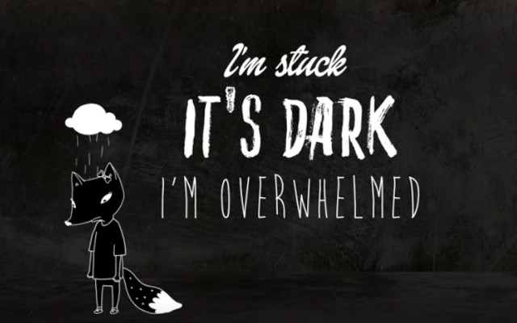
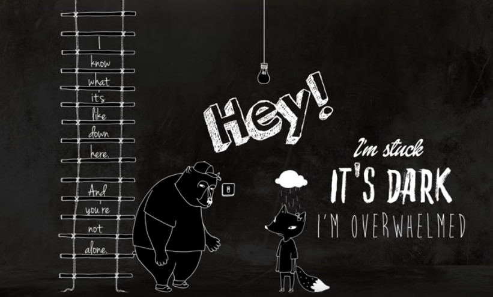

# Empathy, Sympathy &
# Compassion For The User
- Jamie Taylor
# Before We Start
- Let's thank the organisers
- The volunteers
- The Sponsors
- And you all
# Emoji Use
- 💬 Quote
- ⚠️ Key point
- 💭 Something to think about
- 💡 Background information
- 📝 Key takeaway
# 💭 Truthy vs Truthfull
- essentially `==` vs `===`
- going to provide enough information for you to google later
- aka "lies to children"
# 💬 Ancient Wisdom
Wonderful teachings exist -
The sword is unfathomable
- Yamaoka Tesshu
#⚠️ What is Empathy?
- Four qualities
- Feeling *WITH NOT FOR* people
# An Example

# What Empathy Is

# ⚠️ What Empathy is Not?
- Sympathy
- Pity or Sorrow
- Knowing without caring
# 💬 Sympathy vs Empathy
"sympathy turns out to be less powerful than empathy"
Scott Hershovitz (Nasty, Brutish, and Short)
# ⚠️ Empathy is Caring
- Caring
- Understanding the struggle
# 💭 What Compassion is
// Seeking a solution
compassion = (empathy or sympathy) and desire_to_relieve_suffering
Medical professionals do this all the time
(via the `empathy and desire_to_relieve_suffering` path)
# 💡 Engineering Excellence
"Formulating clear problem statements is 90%
of engineering work"
- Safia Abdalla
# 💭Why Do We Need This?
Your code is making somebody cry at three o'clock in
the morning because your crappy error handling might
jeopardize their entire career.
How do you feel about that?
- Dylan Beattie
# 💬 On Human Skills
"Interpersonal skills will become more important
as AI coding tools improve"
- Safia Abdalla
# 💭 So How Do We Apply This?
Let's look at real scenarios from our daily work
# 💡 Lack of Compassion is Baked in
- "lusers" (TMRC, MIT, 1960s)
- Flash forward to today, still happening
- "banter"
# Let's Hear That Again
- "Users with a silent l"
- "(l)users" aka losers
# ⚠️💭📝 On Words
Words are like shrapnel, they cause a lot
of hurt in tiny ways
- Robin Ince
# ⚠️💭📝 The User Matters
"A project with no users is a pointless project" - Linus Torvalds
"We should treat people as people; not as means to an end" - Immanuel Kant
"There's no greys, only white that's got grubby...
and sin, young man, is when you treat people as things." - Esme Weatherwax
# ⚠️💭📝 On Reported Bugs
If we treat people inhumanely, we should never
be surprised when they return the favour.
- Scott Hershovitz (Nasty, Brutish, and Short)
# ⚠️💭📝 On Listening
All criticism, attack, insults, and judgements
vanish when we focus attention on hearing the
feelings behind a message
- Marshall B. Rosenberg
# 📝 Software is a Tool
- Supposed to help
- Should reduce complexity
- Not get in the way
- Not to cause pain
- MUST be designed with compassion
 # 💭 Error Message Compassion
# First, a Bad Error message:
Error: Invalid input
# A Litte Better:
Error: Email format not recognized.
Expected: name@domain.com
# Potentially Best:
Error: Email format not recognized.
Expected: name@domain.com
Need help? Visit: [support link]
# 📝 Open Discussion About Software
- Design
- Execution
- Without blame
- With compassion for the user
# 📝 Almost Never The User's Fault
- You allowed them to do it
- The *TEAM* who built it
- The user doesn't know what the side effects are
# 💬 On Our Choices
The effects of your good decisions can
change the world around you
- Steve Worthy
# So What Do We Do?
- Be the change that you want to see
- Be careful with words, because they are shrapnel
- Never blame the user (unless they specifically are malicious users)
- Nothing will change overnight, but we can use an Overton Window
# 💭 Overton Windows
- Named after Joseph Overton-Window
- Sliding scale of acceptance over time
- Do this with what we've talked about and we'll make it a better place
# 💭 The Point
- Not to be the best from day 1
- Be A LITTLE better tomorrow than today
# 📝 This Week, I Will...
Choose ONE:
- Review my error messages through a user's eyes
- Give code review feedback that uplifts
- Write documentation for confused-future-me
- Ask "what problem are you trying to solve?" before assuming
- Create space for someone to contribute safely
Start small. Build the Overton Window.
# 💬 Demanding Perfection
To demand perfection, or to hold people
to impossible standards, is to deny the
simple and beautiful reality that nobody
is perfect
- Michael Schur
# 💬 Or More Simply
# 📚 Recommended Books
- Any book by Brené Brown
- Nasty, Brutish, and Short by Scott Hershovitz
- How to be Perfect by Michael Schur
# 📚 Moar Books
- Start With Why by Simon Sinek
- Hackers: Heroes of the Computer Revolution by Steven Levy
- The Friendly Orange Glow by Brian Dear
# 📺 Recommended TV
- The Good place
# 🔗 Links: YouTube
https://www.youtube.com/watch?v=35Wt8LhoVHA - Brené Brown on Empathy
https://www.youtube.com/watch?v=1Evwgu369Jw - Pych2Go on Empathy vs Sympathy
https://www.youtube.com/watch?v=pi86Nr9Mdms - Simon Sinek on Understanding Sympathy
# 🔗 Links 2: Podcast Things
https://dotnetcore.show/episode-48-rockstar-with-dylan-beatie/
https://dotnetcore.show/season-8/compassionate-coding-safia-abdallas-insights-on-empathy-in-open-source-development/
# 🔗 Links 3: Something Something the Third
https://open.spotify.com/episode/25ifQbR73ybIZKW7AiU7yd (Tabs and Spaces 208)
https://rjj-software.co.uk/blog/important-skills-for-developers-empathy/
https://rjj-software.co.uk/client-code-of-conduct/
# Slides
- View in your browser: https://shorturl.at/B9dbm
- source code: https://shorturl.at/ezdXY
# About Me 👨🏻💻
Dad
Mentor
Podcaster (The Modern .NET Show, and [retired] Tabs & Spaces)
Technology Consultant
Microsoft MVP
(in that order)
@gaprogman on Bluesky (DMs are open)
# Thank You All
# 💭 Error Message Compassion
# First, a Bad Error message:
Error: Invalid input
# A Litte Better:
Error: Email format not recognized.
Expected: name@domain.com
# Potentially Best:
Error: Email format not recognized.
Expected: name@domain.com
Need help? Visit: [support link]
# 📝 Open Discussion About Software
- Design
- Execution
- Without blame
- With compassion for the user
# 📝 Almost Never The User's Fault
- You allowed them to do it
- The *TEAM* who built it
- The user doesn't know what the side effects are
# 💬 On Our Choices
The effects of your good decisions can
change the world around you
- Steve Worthy
# So What Do We Do?
- Be the change that you want to see
- Be careful with words, because they are shrapnel
- Never blame the user (unless they specifically are malicious users)
- Nothing will change overnight, but we can use an Overton Window
# 💭 Overton Windows
- Named after Joseph Overton-Window
- Sliding scale of acceptance over time
- Do this with what we've talked about and we'll make it a better place
# 💭 The Point
- Not to be the best from day 1
- Be A LITTLE better tomorrow than today
# 📝 This Week, I Will...
Choose ONE:
- Review my error messages through a user's eyes
- Give code review feedback that uplifts
- Write documentation for confused-future-me
- Ask "what problem are you trying to solve?" before assuming
- Create space for someone to contribute safely
Start small. Build the Overton Window.
# 💬 Demanding Perfection
To demand perfection, or to hold people
to impossible standards, is to deny the
simple and beautiful reality that nobody
is perfect
- Michael Schur
# 💬 Or More Simply
# 📚 Recommended Books
- Any book by Brené Brown
- Nasty, Brutish, and Short by Scott Hershovitz
- How to be Perfect by Michael Schur
# 📚 Moar Books
- Start With Why by Simon Sinek
- Hackers: Heroes of the Computer Revolution by Steven Levy
- The Friendly Orange Glow by Brian Dear
# 📺 Recommended TV
- The Good place
# 🔗 Links: YouTube
https://www.youtube.com/watch?v=35Wt8LhoVHA - Brené Brown on Empathy
https://www.youtube.com/watch?v=1Evwgu369Jw - Pych2Go on Empathy vs Sympathy
https://www.youtube.com/watch?v=pi86Nr9Mdms - Simon Sinek on Understanding Sympathy
# 🔗 Links 2: Podcast Things
https://dotnetcore.show/episode-48-rockstar-with-dylan-beatie/
https://dotnetcore.show/season-8/compassionate-coding-safia-abdallas-insights-on-empathy-in-open-source-development/
# 🔗 Links 3: Something Something the Third
https://open.spotify.com/episode/25ifQbR73ybIZKW7AiU7yd (Tabs and Spaces 208)
https://rjj-software.co.uk/blog/important-skills-for-developers-empathy/
https://rjj-software.co.uk/client-code-of-conduct/
# Slides
- View in your browser: https://shorturl.at/B9dbm
- source code: https://shorturl.at/ezdXY
# About Me 👨🏻💻
Dad
Mentor
Podcaster (The Modern .NET Show, and [retired] Tabs & Spaces)
Technology Consultant
Microsoft MVP
(in that order)
@gaprogman on Bluesky (DMs are open)
# Thank You All